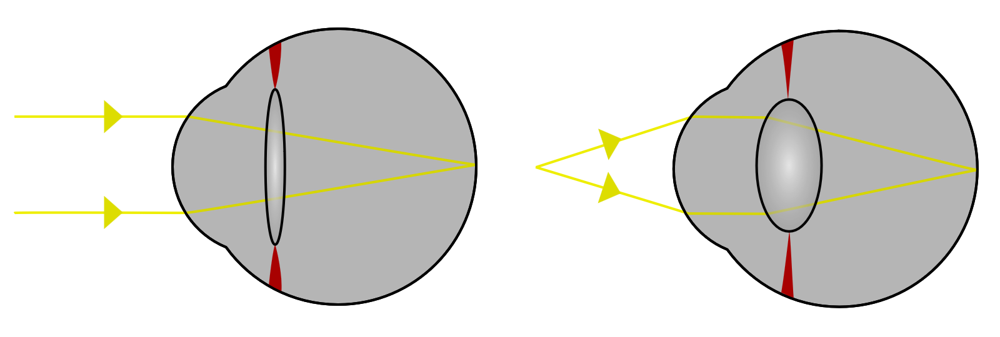
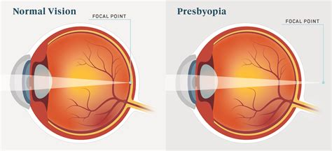
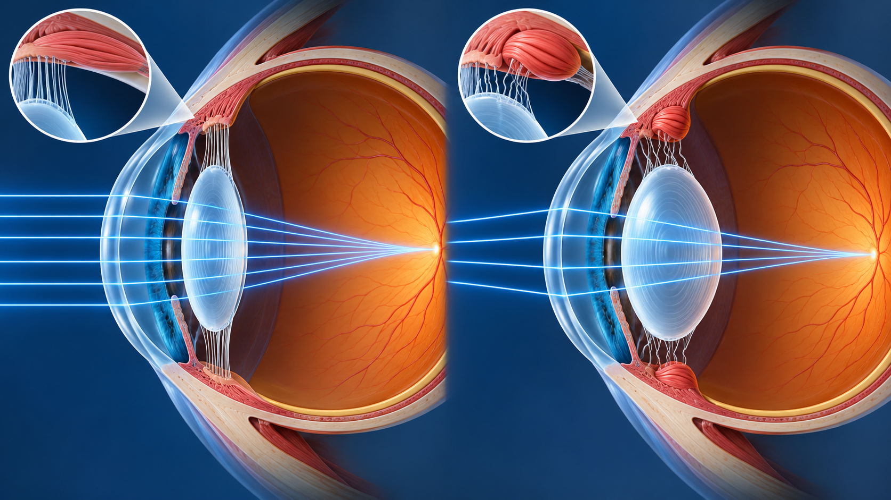
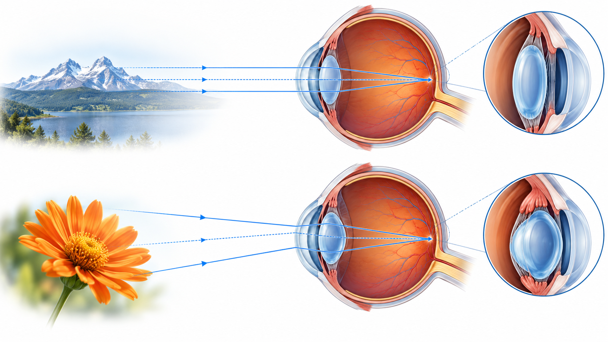

Obiettivi
- Spiegare perché vedere da vicino richiede un aumento del potere.
- Descrivere il ruolo di muscolo ciliare, zonule e cristallino.
- Calcolare la richiesta accomodativa da una distanza di lavoro.
- Distinguere stimolo, risposta e ampiezza accomodativa.
- Separare presbiopia e ipermetropia.
Come mette a fuoco da vicino l’occhio?
Livello intuitivo: Un oggetto vicino manda raggi più divergenti di uno lontano. Per concentrarli sulla stessa retina, l’occhio aumenta la propria capacità di convergenza cambiando la forma del cristallino.
Per essere maggiormente rigorosi: La contrazione del muscolo ciliare riduce la tensione zonulare e permette al cristallino di assumere una forma più curva, soprattutto anteriormente. Il sistema aumenta il potere senza cambiare in modo equivalente la posizione della retina.

Richiesta di accomodazione
Cosa Vuol dire?
Livello intuitivo: Più avviciniamo l’oggetto, più potere aggiuntivo serve. A la richiesta è circa . A diventa : dimezzare la distanza raddoppia la richiesta.
Per essere maggiormente rigorosi: è una distanza positiva espressa in metri. Il reciproco ha unità , cioè diottrie: non aggiungiamo una seconda unità D alla formula come fattore. La relazione è una stima per un occhio emmetrope o compensato da lontano. Lenti, distanza al vertice e ametropia non compensata modificano la richiesta effettiva.
Stimolo, risposta e ampiezza
La richiesta coincide con ciò che fa l’occhio?
Livello intuitivo: La distanza dell’oggetto dice quanto chiediamo all’occhio. La risposta è quanto l’occhio cambia davvero il proprio potere. Le due quantità possono essere diverse.
Per essere maggiormente rigorosi: La risposta accomodativa può mostrare un ritardo rispetto allo stimolo. L’ampiezza è l’intervallo massimo disponibile fra stato rilassato e massima accomodazione. Risultati e stime dipendono dal metodo di misura e dalla profondità di fuoco.
Presbiopia
Perché diventa più difficile leggere vicino?
Livello intuitivo: Con l’età il sistema di messa a fuoco dispone di una regolazione meno ampia. Può non riuscire a fornire tutto il potere richiesto per leggere alla distanza abituale.
Per essere maggiormente rigorosi: La presbiopia è la riduzione progressiva della capacità accomodativa, associata soprattutto ai cambiamenti biomeccanici del cristallino e del sistema accomodativo. Non coincide con l’ipermetropia, che riguarda invece lo stato refrattivo a riposo. Un occhio emmetrope può diventare presbite.

Che cosa fa un’addizione per vicino?
Livello intuitivo: Una lente positiva fornisce una parte della convergenza necessaria per il vicino. L’occhio deve quindi aggiungerne meno.
Per essere maggiormente rigorosi: L’addizione dipende dalla correzione da lontano, dalla distanza di lavoro, dalla risposta residua e dalla riserva richiesta per un’attività prolungata. Le tabelle legate all’età descrivono tendenze di popolazione, non una prescrizione individuale. Questo modello didattico non sostituisce una valutazione visiva.
Riferimenti

